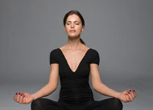
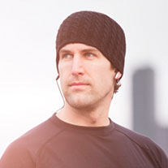
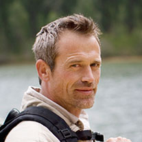

Our approach
Care first.
Progress follows.
Belle & Carrie is a welcoming yoga studio for people who want to move with more confidence, comfort, and connection. Our rehabilitation-informed approach blends mindful movement with practical guidance, always leaving room for your body's needs on the day.
There is no perfect pose to reach here. We make space for questions, offer options instead of pressure, and celebrate the small shifts that add up over time.
Find your classThe people who guide you
Meet your instructors
Belle
Restorative movement

Jake
Mobility and balance

Chris
Strength and breathing